Codex Signal

你的蓝色搭档专注时安静。
专注时安静。
找你时抬头。
圆润头罩，冰蓝面罩。
一对小括号，把状态变成表情。
在会话伙伴岛里 · 56 PX
API 服务
需要审批确认数据库迁移
蓝色属于 Codex 伙伴，状态由姿态与标记表达。
当前：等待审批工作起伏 · 休息呼吸 · 等待只提醒一次
Codex · 蓝色伙伴「团团」
同一轮廓 · 同一束光 · 不同回应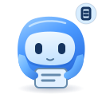
睁眼托着结果，等待查看

闭上眼睛，安静等候

双鳍收拢，专注处理
举起右鳍，等你确认
侧过头，听你的想法
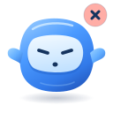
停下动作，提醒检查
小，也看得清。
24 / 28px 简化细节
以下均为实际尺寸
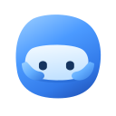
24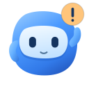
285664
96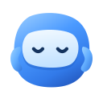
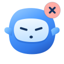
Claude Code · 橙色小螃蟹「钳钳」
同一套姿态与角标 · 橙色只属于 Claude Code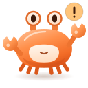
CLAUDE CODE 的搭档专注时安静。
专注时安静。
找你时举钳。
圆壳，眼柄，一对小钳子。
六种状态与蓝色伙伴一一对应。
在会话伙伴岛里 · 56 PX
设计系统
需要审批确认数据库迁移
Codex 会话是蓝色伙伴，Claude Code 会话是橙色螃蟹。
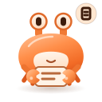
睁大眼睛，捧着结果
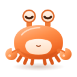
合上眼睛，钳子落地
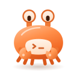
双钳在前，专注处理
举起右钳，等你确认
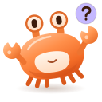
侧过身子，听你的想法
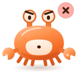
垂下双钳，提醒检查
小，也认得出。
24 / 28px 简化细节
以下均为实际尺寸
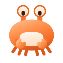
24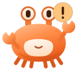
2856
64
96
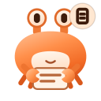
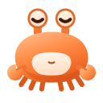
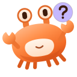
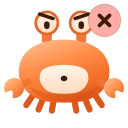